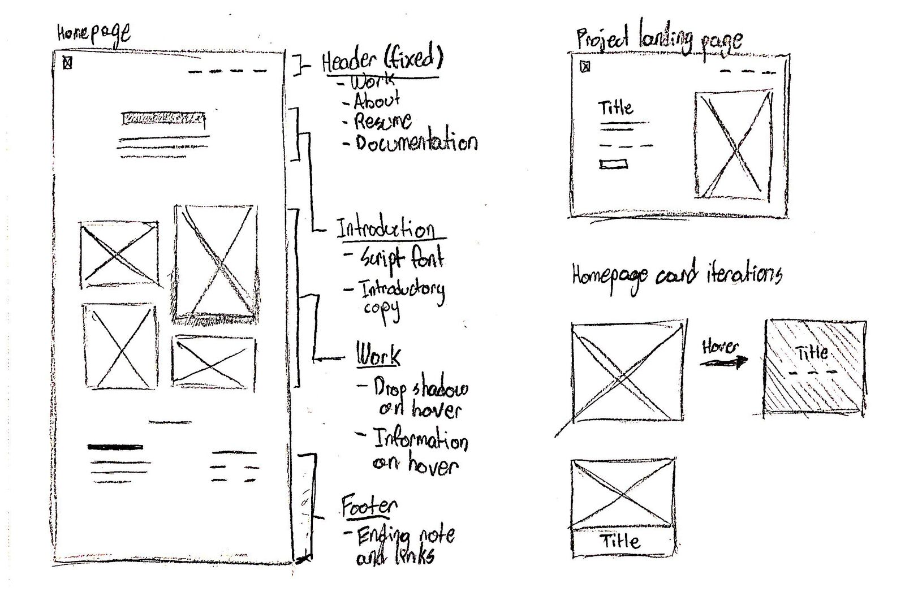

I did not use many outside sources for this project, but the ones I did use are linked below.
Hamburger Menu Code (credit to mutedblues of codepen)
Although I am used to using HTML/CSS, this project contained its own specific challenges that required me to think outside of the box or consult outside sources for help.
Although I am not a novice with flexbox, it was still an interesting challenge to create a staggered grid of items using this handy css technique. However, after some careful thinking I was able to get it working.
Creating a mobile hamburger menu was very difficult for me. After many failed attempts, I was able to adapt a hamburger menu codepen code for my exercise, and I am very happy with the result.
I expect my portfolio to be accessed and viewed by multiple different demographics, including potential employers, fellow students, and my own professors.
Goal: Identify my interests and skill level as a designer, and make a judgement on whether I could be a good fit for their company.
The most important demographic for my portfolio site, a potential employer expects my portfolio site to tell them a story. What are my interests as a designer? What does my design process look like? Do I seem like a good “fit” for their company? All of these questions need to be answered not just through the copy of my portfolio site, but through the visual representation and interactions of my site as well.
Goal: Explore how a peer is visually displaying their work and learn from it.
Being that my major is inherently competitive, I expect my peers to be looking at other people’s portfolios and learning from them. As one of the largest benefits of being in a tight-knit major, I want to make sure my portfolio is up to par with my peers. As well, being a mentor for the younger classes, I want my portfolio to be used as a guide on how to display my own work.
As designers, we are consistently faced with the crossroads of choice. This project was no different.
I made sure to take careful consideration when using imagery on my portfolio site. I wanted each image to be meaningful and crry weight. I believe that my University News page dispays this ideal fully. Every image was carefully crafted and considered in order to display my work to the best of its ability.
I wanted my typography to become a fusion of my fun-loving personality, and my sophisticated approach to design and the respect I have for the process. The contrast of the "Lobster" font on my homepage and the typography I use on my work pages is indicative of this.
Pressing pen to paper is just as important as coding and designing.
Pushing myself past my limits in the approach to design and programming.
For my University News page specifically, I chose to completely display the entirety of the design process instead of the required two paragraphs. I am grateful that I did this, because it forced me to fuse my design and programming skill to tell the most effective story possible.
To ease my users in navigating particularly long work pages, I pushed myself to create a "back to top" button. I am happy with the result.